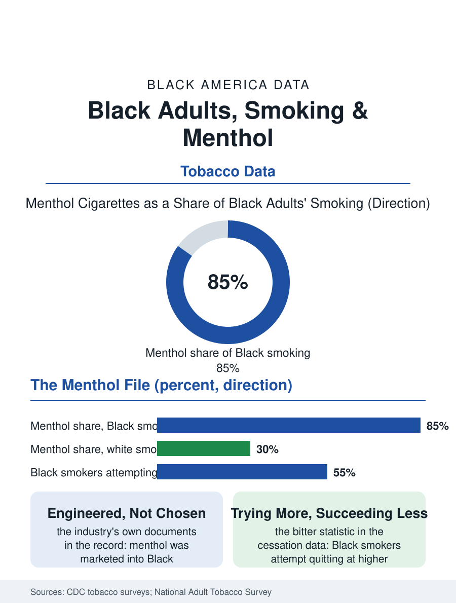

Black Public Health
The Green Pack: Black Adults, Smoking, and Menthol
Eighty-five percent of Black smokers use menthol, a concentration the industry's own documents engineered, while quit attempts lead and quit success lags. The tobacco file.

Black adults smoke at rates modestly above the white rate, roughly one in seven against one in eight in the federal surveys, but the defining fact of the Black tobacco file is not the rate: it is that about eighty-five percent of Black smokers smoke menthol cigarettes, against roughly a third of white smokers, the widest product-pattern gap in the consumer health data. This article reads the tobacco file.
How Menthol Became the Product
The menthol concentration is a marketing outcome documented in the industry's own records, produced by the litigation disclosures this atlas's method treats as primary sources: from the 1950s forward the menthol brands targeted Black consumers with a deliberateness the internal documents describe in the language of market segmentation, advertising concentrated in Black media, sponsorship woven through the music and nightlife economy, price promotions and retail density targeted by neighborhood, until the green pack became the default product of Black smoking. The public health literature adds the pharmacology: menthol's cooling masks the smoke's harshness, eases initiation, and in the study record associates with deeper inhalation patterns and harder quitting, so that the product's design and its marketing compound in the outcome data, Black smokers attempting to quit at higher rates than white smokers in the survey record while succeeding at lower rates, the file's central and bitter statistic. Youth initiation follows the product: the surveys of adolescent smoking find the menthol gateway pattern repeating in each cohort the industry is permitted to reach, with the flavored cigar and cigarillo economy, the little cigars of the corner store file, extending the pattern into the next product generation even as cigarette smoking itself declines.
The Disease Ledger
The health consequences distribute across the systems this health section files separately: the lung cancer file's incidence and mortality, the cardiovascular file's smoking-attributable share, the COPD and respiratory burden, each carrying tobacco's contribution at rates the exposure explains. The cessation system's data complete the ledger's other side: Black smokers are counseled at lower rates in the clinical encounter studies, prescribed cessation pharmacotherapy at lower rates, and reached by the quitline and program infrastructure at rates below their share of smoking, the treatment gap compounding the product gap in the pattern this atlas records wherever a burden and a remedy are distributed by different logics. The secondhand exposure file belongs here too: the household smoking data show Black children exposed at elevated rates in the biomarker studies, cotinine levels measuring what the household surveys understate, with the multi-unit housing exposure of the apartment stock adding a neighbor-mediated pathway the single-family data never contemplate. The vaping transition has redrawn the youngest cohorts' nicotine map, the surveys recording Black youth adoption patterns distinct from the cigarette era's, slower on the pod devices' first wave, heavier in the cigarillo and later disposable categories, a divergence the regulators' category-by-category approach keeps chasing a product generation behind.
The Policy File
The menthol question is the tobacco policy file's longest-running racial case: the 2009 tobacco law banned characterizing flavors in cigarettes and exempted menthol in the same sentence, commissioning the study whose conclusion, that a menthol ban would benefit public health with the largest benefits accruing to Black Americans, has been on the record for over a decade while the rulemaking advanced, stalled, and reversed across administrations. The public health community's own division belongs in the file honestly: the enforcement concern, that a ban policed at the street level would reproduce the harms of other prohibitions in the community it aims to benefit, against the mortality accounting, which counts the ban's projected averted deaths in the hundreds of thousands over a generation, disproportionately Black lives, the two arguments proceeding from different files of this same atlas. State and city action filled part of the federal vacuum, Massachusetts and California and dozens of localities enacting menthol restrictions whose early outcome data show sales shifting rather than vanishing, cross-border and illicit channels absorbing a share the evaluations are still measuring. The tobacco file closes on the industry's oldest target and public health's clearest test: a product engineered and marketed into one community for seventy years, a quit-attempt rate that proves the community's intentions, and a success rate that prices the engineering. The data leave the verdict where the surveys put it: the smokers are trying. The product, and the system that delivered it, are what the numbers indict.
More in Black Public Health
Hypertension Among Black Adults: Prevalence, Control, and Consequences
About 55 percent of Black adults have hypertension — the highest rate of any U.S. group. Prevalence, onset, control, and the stroke, heart, and kidney consequences in the data.
Diabetes Among Black Adults: Prevalence and Complications
Nearly one in five Black adults has diabetes, diagnosed or undiagnosed — and its complications fall with particular weight. The CDC data on prevalence, control, and outcomes.
Black Life Expectancy: The Gap at Birth and Its Causes
Black life expectancy at birth is about 73 years, roughly five years below the national figure — the summary measure of every health gap in this section. The CDC data.
Source: Centers for Disease Control and Prevention, National Adult Tobacco Survey and tobacco use supplements; FDA Tobacco Products Scientific Advisory Committee findings.